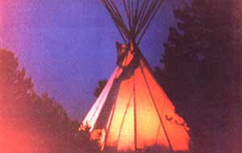
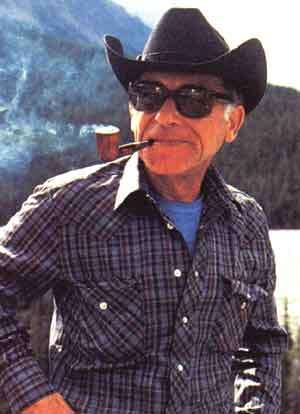
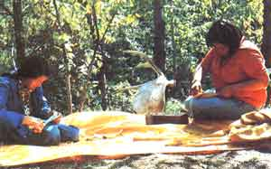

Americans are discovering a Canadian experience that European visitors have long enjoyed.
Camp Apa Cheesta is hidden away in the dramatic Canadian Rockies, with a view toward Jasper National Park on one side and the Willmore Wilderness Park on the other. By the time visitors riding in one of the camp's rugged vehicles have forded five rushing streams and negotiated a rough backwoods road that often runs along the creek beds themselves and then have hiked the mile or so up to their tipi homes high on a mountain meadow, they have no doubt that they've left the normal pressures of urban life behind and have entered a rare and remarkable natural environment.
Camp Apa Cheesta is the creation of Frank Black Bear, a world-traveled, witty Blackfoot Indian who is fluent in almost a dozen languages. His heart, however, has always stayed in the mountains where he was born, and Frank has long been involved in preserving the ways of his people. Furthermore, he also takes great pleasure in teaching wilderness self-reliance and sharing present-day Native American culture with "outsiders".
Black Bear believes that the human spirit is nourished by beauty and tranquillity, and in his travels throughout the world, he's found many people (particularly those who live in cities) who seem to be alienated not only from an awareness of nature and other human beings but from a knowledge of themselves as well. Frank and his people have found their nourishment-and other positive values-in wilderness. He offers to share this with those who visit his camp.
There is no set "structure" at Apa Cheesta. No one will wake you, for example, at any set time. And should you miss breakfast, you can simply cook it yourself . . . or settle for the ever-present tea and coffee simmering by the campfire. Likewise, you can help your guide/ instructor with chores or just lie back and watch the region's spectacular cloud formations put on their show. You can go off on a four-day backpacking trip or hang out in the tipi, reading some of the camp's books on North American Indians and natural lore. You can learn to make your own moose-skin moccasins or simply marvel at the deft fingers of the Blackfoot women as they instruct others . . . because at Camp Apa Cheesta, the key word is "freedom".
For this reason, the camp is not for everyone. Most children, for instance, would be likely to need more structured time, so the minimum age limit is 18 (16-year-olds are welcome if they are accompanied by an adult). There's no upper age limit, though, and each ten-day session is usually shared by no more than ten people.
As you might imagine, many find Black Bear's casual but very personal wilderness-lifestyle experience well worth traveling thousands of miles to share. When one of MOTHER's staff members participated in the camp's final session at the end of last summer, three Europeans were there for a second time, and one German was returning for a third visit. At first, our associate editor found such loyalty to a single vacation spot rather amazing, but so rich was the conversation, so frequent the laughter, so beautiful the environment, and so comfortable the atmosphere created by Black Bear and his staff that-after being away from the camp for three days on a pack trip by horse (Frank can arrange these excursions)-she noted, "It's strange that coming back to a tipi in a meadow miles from where I live can feel so much like returning to a happy home.
EDITOR'S NOTE: A ten-day session at Camp Apa Cheesta costs 750 Canadian dollars (approximately $593 at current exchange rates) to and from Hinton, Alberta. This includes all meals in camp and on trips and all equipment, including a sleeping bag and material for leatherwork and instruction. And, in addition to summer sessions, Camp Apa Cheesta also offers a winter program of skitouring with sled dogs. For more information contact Vobis Enterprises (Alberta) Ltd., Dept. TMEN, Box 803, Hinton, Alberta, Canada TOE 1B0, telephone: 403/ 865-7877.
|
 PHOTOS BY BILLY SHEER AND MOHTER'S STAFF Luxury accommodations at Camp Apa Cheesta. |
 Frank Black Bear |
 At the camp, Blackfoot tribes women teach Native American crafts. |